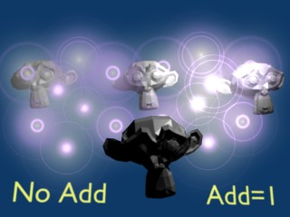

Halo Rendering¶
{kind=link}
Activating helo rendering.
Halo materials renders each of the objects points as glowing dots or a little clouds of light. Although they are not really lights because they do not cast light into the scene like a lamp. These are called Halos because you can see them, but they do not have any substance.
Halos are rendered with vertex shaders and not with face shaders.
This material is useful for simulating special effects, like particle effects or lens flares.
Options¶
{kind=link}
Halo panels.
To enable Halos, press the Halo button in the Material menu’s top panel.
As you will see in the 3D View, the mesh faces are no longer rendered. Instead just the vertex is rendered, since that is where each halo will originate. Halos can be hard to find in a crowded scene, so name it well for easy location in the outliner.
In the Properties editors, where we normally find the Diffuse, Specular, and Shading panels, we now see panels relative to the Halo characteristics:
Halo Panel¶
- Alpha
- The transparency.
- Diffuse Color
- The color of the halo itself.
- Seed
- If non-zero, randomizes the ring dimension and line location. To use, give any (integer) number to start the random-number generator.
- Size
- Sets the dimension of the halo
- Hardness
- Sets the hardness of the halo. Similar to specular hardness
- Add
Determine how much the halo colors are ‘added to’, rather than mixed with, the colors of the objects behind and together with other halos. By increasing Add, the Halo will appear to light up objects that move behind it or through the Halo field.
Effect of Add.
- Texture
- Gives halo a texture. By default, textures are applied to objects with Object coordinates and reflects on the halos by affecting their color, as a whole, on the basis of the color of the vertex originating the halo. Enable this feature to have the texture take effect within the halo, and hence to have it with varying colors or transparencies; this will map the whole texture to every halo. This technique proves very useful when you want to create a realistic rain effect using particle systems, or similar.
- Vertex Normal
- Use the vertex normal to specify the dimension of the halo.
- Extreme Alpha
- Boosts alpha.
- Shaded
Lets halo receive light and shadows from external objects.
When shaded is enabled, the Halo will be affected by local light; a lamp will make it brighter and affect its diffuse color and intensity.
- Soft
- Softens the edges of the halos at intersections with other geometry.
In addition, several other special effects are available. To enable some or all of these effects, set the number of points/rings, or set the color of each effect individually:
- Rings
- Adds circular rings around to the halo.
- Lines
- Adds lines from the center of the halo.
- Star tips
- Gives the halo a star shape.
You cannot use color ramps. Lines, Rings and an assortment of special effects are available with the relevant toggle buttons, which include Flare, Rings, Lines, Star, Texture, Extreme Alpha, and Shaded. Halo Variations shows the result of applying a halo material to a single vertex mesh.
Halo Variations.
Flare Panel¶
Enabling Flare Renders the halo as a lens flare.
- Size
- Sets the factor by which the flare is larger than the halo.
- Boost
- Give the flare extra strength.
- Seed
- Specifies an offset in the flare seed table.
- Subflares
- Sets the number of subflares.
- Subsize
- Sets the dimensions of the subflares, dots, and circles.
Lens Flares¶
Our eyes have been trained to believe that an image is real if it shows artifacts that result from the mechanical process of photography. Motion blur, Depth of Field, and lens flares are just three examples of these artifacts. The first two are discussed in the chapter rendering; the latter can be produced with special halos. A simulated lens flare tells the viewer that the image was created with a camera, which makes the viewer think that it is authentic.
We create lens flares in Blender from a mesh object using first the Halo button and then the Flare options in the Shaders Panel of the material settings. Try turning on Rings and Lines, but keep the colors for these settings fairly subtle. Play with the Flares: number and Fl. seed: settings until you arrive at something that is pleasing to the eye. You might need to play with Boost: for a stronger effect Fig. Lens Flare. settings.
Note that this tool does not simulate the physics of photons traveling through a glass lens; it’s just an eye candy.
Blender’s lens flare looks nice in motion, and disappears when another object occludes the flare mesh.
{kind=link}
Lens Flare.
Halo Texturing¶
By default, textures are applied to objects with Object coordinates and reflects on the halos by affecting their color, as a whole, on the basis of the color of the vertex originating the halo. To have the texture take effect within the halo, and hence to have it with varying colors or transparencies press the Texture button; this will map the whole texture to every halo. This technique proves very useful when you want to create a realistic rain effect using particle systems, or similar.
Another Option is Shaded. When shaded is enabled, the Halo will be affect by local light; a lamp will make it brighter and affect its diffuse color and intensity.
Examples¶
Dotmatrix Display¶
Let us use a halo material to create a dotmatrix display:
- To begin, add a grid with the dimensions 32×16. Then add a camera and adjust your scene so that you have a nice view of the billboard.
- Use a 2D image program to create some red text on a black background, using a simple and bold font, you can just save the picture below on your hard drive...). Dot matrix image texture. shows an image 512 pixels wide by 64 pixels high, with some black space at both sides.
Dot matrix image texture.
- Add a material for the billboard, and set it to the type Halo. Set the Halo Size to 0.06 and when you render the scene you should see a grid of white spots.
- Add a Texture, then change to the Texture Buttons and make it an image texture. When you load your picture and render again you should see some red tinted dots in the grid.
- Return to the Material Buttons and adjust the size X parameter to about 0.5 then render again; the text should now be centered on the Billboard.
- To remove the white dots, adjust the material color to a dark red and render.
You should now have only red dots, but the billboard is still too dark.
To fix this enter Edit Mode for the board and copy all vertices using the
Shift-Dshortcut (take care not to move them!). Then adjust the brightness with the Add value in the Halo panel.
Dot Matrix display.
You can now animate the texture to move over the billboard, using the Offset X value in the Texture tab of the Mapping panel. (You could use a higher resolution for the grid, but if you do you will have to adjust the size of the halos by shrinking them, or they will overlap. Fig. Dot Matrix display..
注解
Note about material indices
Halo materials only work when applied using the first material index. Any material(s) in a subsequent material index will not be rendered.